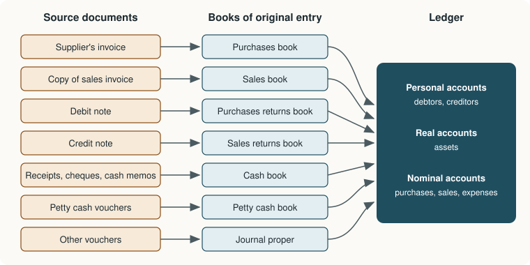

Chapter 4: Subsidiary Books and the Cash Book¶
Dividing the journal so that routine transactions are recorded quickly and posted in totals
Learning outcomes
After studying this chapter you should be able to:
- Explain why the journal is divided into subsidiary books and name each book.
- Write up the purchases, sales, purchases returns and sales returns books, and post them to the ledger.
- Say which transactions are recorded in the journal proper.
- Prepare a cash book with discount, cash and bank columns, including contra entries, and post it.
- Keep a petty cash book on the imprest system with analysis columns.
4.1 Why the journal is divided¶
In Chapter 3 every transaction was recorded in a single journal and then posted, one entry at a time, to the ledger. That works for a few transactions. A real business makes hundreds of credit sales and purchases and thousands of cash payments each month, and recording each in the journal with a full narration, then posting each to the ledger twice, would be slow and would invite errors.
Most transactions are of a few repeated kinds: credit purchases of goods, credit sales of goods, returns, and receipts and payments of cash. So the journal is divided into subsidiary books (also called special journals or books of original entry), one for each kind of repeated transaction. The advantages are:
- Division of work. Different clerks can keep different books at the same time.
- Saving of time. No narration is needed, because the book itself says what kind of transaction each line is; and the same-sided entries (all credit sales, say) are posted to the ledger as one total at the end of the month instead of one by one.
- Easy reference. All credit sales are in one place, so questions such as "what were sales in May?" are answered quickly.
- Better control. Each book can be checked separately, and errors are easier to locate.

| Book | Records | Source document |
|---|---|---|
| Purchases book | Credit purchases of goods for resale | Supplier's invoice (inward invoice) |
| Sales book | Credit sales of goods | Copy of the sales invoice (outward invoice) |
| Purchases returns book | Goods returned to suppliers | Debit note |
| Sales returns book | Goods returned by customers | Credit note |
| Cash book | All receipts and payments of cash and through the bank | Receipts, cash memos, cheque counterfoils, pay-in slips |
| Petty cash book | Small cash payments | Petty cash vouchers |
| Journal proper | Every transaction that does not belong in another book | Vouchers, memos |
Table 4.1. The subsidiary books.
4.2 The purchases book¶
The purchases book (purchases journal, purchases day book) records credit purchases of goods only. Cash purchases of goods go in the cash book; purchases of assets on credit, such as furniture or machinery, go in the journal proper, because they are not goods for resale.
The usual columns are: date, name of the supplier with brief details of the goods, invoice number, ledger folio, a details column for the working, and the amount (net of trade discount).
Example 4.1 Purchases book of Rao Traders
Rao Traders, a clothing wholesaler, made these credit purchases in May 2025:
- May 2: from Jain Bros, 50 shirts at ₹400 each, less 10% trade discount.
- May 9: from Patel & Sons, 30 trousers at ₹600 each and 20 belts at ₹150 each, less 5% trade discount.
- May 20: from Jain Bros, 40 ties at ₹200 each.
- May 24: from Office Mart, a computer for office use, ₹45,000 on credit.
Purchases Book of Rao Traders
| Date 2025 | Particulars | Invoice no. | L.F. | Details (₹) | Amount (₹) |
|---|---|---|---|---|---|
| May 2 | Jain Bros: 50 shirts @ ₹400 | 311 | 20,000 | ||
| Less: Trade discount 10% | 2,000 | 18,000 | |||
| May 9 | Patel & Sons: 30 trousers @ ₹600 | 86 | 18,000 | ||
| 20 belts @ ₹150 | 3,000 | ||||
| 21,000 | |||||
| Less: Trade discount 5% | 1,050 | 19,950 | |||
| May 20 | Jain Bros: 40 ties @ ₹200 | 342 | 8,000 | ||
| May 31 | Purchases A/c ... Dr | 45,950 |
The computer bought from Office Mart is not entered: it is an asset, not goods for resale, and is recorded in the journal proper (Office Equipment A/c Dr ₹45,000, To Office Mart ₹45,000).
Posting. Each supplier's account is credited with the amount of each invoice on its date; at the end of the month, Purchases Account is debited with the total.
| Account | Side | Entry | ₹ |
|---|---|---|---|
| Jain Bros | Credit | May 2 By Purchases A/c | 18,000 |
| Jain Bros | Credit | May 20 By Purchases A/c | 8,000 |
| Patel & Sons | Credit | May 9 By Purchases A/c | 19,950 |
| Purchases A/c | Debit | May 31 To Sundries as per purchases book | 45,950 |
The credits (18,000 + 8,000 + 19,950 = 45,950) equal the single debit, so double entry is complete.
4.3 The sales book¶
The sales book (sales journal, sales day book) records credit sales of goods only. Cash sales go in the cash book; sales of old assets on credit go in the journal proper. Its form is the same as that of the purchases book.
Example 4.2 Sales book of Rao Traders
Credit sales in May 2025:
- May 5: to Kumar Stores, 20 shirts at ₹550 each, less 10% trade discount.
- May 14: to Singh Garments, 15 trousers at ₹800 each and 10 belts at ₹250 each.
- May 25: to Kumar Stores, 10 ties at ₹300 each.
Sales Book of Rao Traders
| Date 2025 | Particulars | Invoice no. | L.F. | Details (₹) | Amount (₹) |
|---|---|---|---|---|---|
| May 5 | Kumar Stores: 20 shirts @ ₹550 | S-101 | 11,000 | ||
| Less: Trade discount 10% | 1,100 | 9,900 | |||
| May 14 | Singh Garments: 15 trousers @ ₹800 | S-102 | 12,000 | ||
| 10 belts @ ₹250 | 2,500 | 14,500 | |||
| May 25 | Kumar Stores: 10 ties @ ₹300 | S-103 | 3,000 | ||
| May 31 | Sales A/c ... Cr | 27,400 |
Posting. Kumar Stores is debited with ₹9,900 (May 5) and ₹3,000 (May 25); Singh Garments is debited with ₹14,500 (May 14); Sales Account is credited with the total of ₹27,400 on May 31 ("By Sundries as per sales book").
4.4 The returns books¶
Goods are returned when they are damaged, defective or not as ordered.
When the business returns goods to a supplier, it sends a debit note, so called because it tells the supplier that his account is being debited in the buyer's books. These returns are recorded in the purchases returns book (returns outward book). Each supplier's account is debited, and Purchases Returns Account is credited with the monthly total.
When a customer returns goods, the business issues a credit note, telling the customer that his account has been credited. These returns are recorded in the sales returns book (returns inward book). Each customer's account is credited, and Sales Returns Account is debited with the monthly total.
Example 4.3 Returns books of Rao Traders
- May 12: returned 2 trousers to Patel & Sons as defective (bought at ₹600 less 5% trade discount).
- May 18: Singh Garments returned 2 belts (sold at ₹250 each).
Purchases Returns Book
| Date 2025 | Particulars | Debit note no. | L.F. | Details (₹) | Amount (₹) |
|---|---|---|---|---|---|
| May 12 | Patel & Sons: 2 trousers @ ₹600 | DN-7 | 1,200 | ||
| Less: Trade discount 5% | 60 | 1,140 | |||
| May 31 | Purchases Returns A/c ... Cr | 1,140 |
Sales Returns Book
| Date 2025 | Particulars | Credit note no. | L.F. | Amount (₹) |
|---|---|---|---|---|
| May 18 | Singh Garments: 2 belts @ ₹250 | CN-3 | 500 | |
| May 31 | Sales Returns A/c ... Dr | 500 |
The returns are valued at the price actually charged, net of trade discount. After posting, the two customers' and suppliers' accounts affected look like this:
Patel & Sons
| Date | Particulars | ₹ | Date | Particulars | ₹ |
|---|---|---|---|---|---|
| May 12 | To Purchases Returns A/c | 1,140 | May 9 | By Purchases A/c | 19,950 |
| May 31 | To Balance c/d | 18,810 | |||
| 19,950 | 19,950 | ||||
| Jun 1 | By Balance b/d | 18,810 |
Singh Garments
| Date | Particulars | ₹ | Date | Particulars | ₹ |
|---|---|---|---|---|---|
| May 14 | To Sales A/c | 14,500 | May 18 | By Sales Returns A/c | 500 |
| May 31 | By Balance c/d | 14,000 | |||
| 14,500 | 14,500 | ||||
| Jun 1 | To Balance b/d | 14,000 |
4.5 The journal proper¶
Whatever does not belong to any of the special books is recorded in the journal proper. The main items are:
- opening entries at the start of the year;
- credit purchases and sales of assets other than goods (a machine bought on credit, old furniture sold on credit);
- adjustment entries at the end of the year: outstanding and prepaid expenses, accrued income, depreciation, provisions (Chapters 7 and 8);
- transfer entries, such as moving the balance of drawings to capital;
- closing entries, which transfer revenue and expense balances to the trading and profit and loss account;
- rectification entries that correct errors (Chapter 6);
- other non-cash items: goods taken by the owner, goods lost by fire, bad debts written off, bills of exchange accepted or dishonoured (Chapter 5) and interest on capital.
4.6 The cash book¶
The cash book records every receipt and payment of cash, and every deposit into and withdrawal from the bank. It is unusual among the subsidiary books: it is both a book of original entry, because transactions are first recorded in it, and a ledger account, because it takes the place of Cash Account and Bank Account in the ledger. A separate Cash Account is therefore not kept in the ledger; the balance of the cash book is the cash balance.
Like Cash Account, it has a debit (receipts) side and a credit (payments) side. Its common forms are:
- the simple cash book, with one amount column on each side, for cash only;
- the cash book with cash and bank columns, which records both cash and bank transactions;
- the cash book with discount, cash and bank columns (often called the three-column cash book), which also records cash discounts allowed and received;
- the petty cash book, for small payments.
Contra entries¶
A transaction that involves both cash and bank, such as depositing cash in the bank or withdrawing cash from the bank for office use, affects two columns of the same cash book. Both sides of the entry are made in the cash book itself: depositing cash is entered in the bank column on the debit side and in the cash column on the credit side. Such an entry is called a contra entry and is marked "C" in the folio column, meaning that no posting to the ledger is needed: the double entry is complete within the book.
The discount columns¶
Cash discount is recorded alongside the payment or receipt that earned it, in a discount column on each side. On the debit side, the discount column records discount allowed to customers; on the credit side, discount received from suppliers. The discount columns are memorandum columns: they are not balanced, because they are not part of the cash or bank balance. Their totals are posted at the end of the period: the debit-side total to the debit of Discount Allowed Account, and the credit-side total to the credit of Discount Received Account. The individual discounts are posted to the customers' and suppliers' accounts along with the cash.
Example 4.4 Cash book of Rao Traders with discount, cash and bank columns
Transactions for June 2025:
| Date | Transaction |
|---|---|
| Jun 1 | Cash in hand ₹15,000; balance at bank ₹40,000 |
| Jun 3 | Received a cheque from Kumar Stores for ₹9,700 in full settlement of ₹9,900, deposited the same day |
| Jun 6 | Paid Jain Bros by cheque ₹17,550 in full settlement of ₹18,000 |
| Jun 8 | Cash sales ₹6,500 |
| Jun 10 | Deposited cash in the bank ₹10,000 |
| Jun 14 | Paid wages in cash ₹2,800 |
| Jun 17 | Received cash ₹13,800 from Singh Garments in full settlement of ₹14,000 |
| Jun 20 | Withdrew ₹5,000 from the bank for office use |
| Jun 24 | Paid rent by cheque ₹7,000 |
| Jun 27 | Cash purchases ₹4,500 |
| Jun 30 | Paid salaries in cash ₹7,500 |
Cash Book of Rao Traders (Dr side: receipts; Cr side: payments)
| Date | Particulars | L.F. | Disc. | Cash | Bank | Date | Particulars | L.F. | Disc. | Cash | Bank |
|---|---|---|---|---|---|---|---|---|---|---|---|
| Jun 1 | To Balance b/d | 15,000 | 40,000 | Jun 6 | By Jain Bros | 450 | 17,550 | ||||
| Jun 3 | To Kumar Stores | 200 | 9,700 | Jun 10 | By Bank | C | 10,000 | ||||
| Jun 8 | To Sales A/c | 6,500 | Jun 14 | By Wages A/c | 2,800 | ||||||
| Jun 10 | To Cash | C | 10,000 | Jun 20 | By Cash | C | 5,000 | ||||
| Jun 17 | To Singh Garments | 200 | 13,800 | Jun 24 | By Rent A/c | 7,000 | |||||
| Jun 20 | To Bank | C | 5,000 | Jun 27 | By Purchases A/c | 4,500 | |||||
| Jun 30 | By Salaries A/c | 7,500 | |||||||||
| Jun 30 | By Balance c/d | 15,500 | 30,150 | ||||||||
| 400 | 40,300 | 59,700 | 450 | 40,300 | 59,700 | ||||||
| Jul 1 | To Balance b/d | 15,500 | 30,150 |
Workings.
- Cash column: receipts 15,000 + 6,500 + 13,800 + 5,000 = ₹40,300; payments 10,000 + 2,800 + 4,500 + 7,500 = ₹24,800; balance 40,300 − 24,800 = ₹15,500.
- Bank column: receipts 40,000 + 9,700 + 10,000 = ₹59,700; payments 17,550 + 5,000 + 7,000 = ₹29,550; balance 59,700 − 29,550 = ₹30,150.
- Discount columns are only totalled: allowed ₹400 (200 + 200), received ₹450.
Posting from the cash book.
| Ledger account | Entry | ₹ |
|---|---|---|
| Kumar Stores | Cr: By Bank 9,700 and By Discount Allowed 200 | 9,900 |
| Singh Garments | Cr: By Cash 13,800 and By Discount Allowed 200 | 14,000 |
| Jain Bros | Dr: To Bank 17,550 and To Discount Received 450 | 18,000 |
| Sales A/c | Cr: By Cash | 6,500 |
| Wages A/c | Dr: To Cash | 2,800 |
| Rent A/c | Dr: To Bank | 7,000 |
| Purchases A/c | Dr: To Cash | 4,500 |
| Salaries A/c | Dr: To Cash | 7,500 |
| Discount Allowed A/c | Dr: To Sundries as per cash book | 400 |
| Discount Received A/c | Cr: By Sundries as per cash book | 450 |
The two contra entries (June 10 and June 20) are not posted.
Caution
The cash column can never show a credit balance: payments of cash cannot exceed the cash available. The bank column can, when the bank allows an overdraft; a credit balance in the bank column means the business owes the bank. Also remember that a cheque received and deposited on the same day is entered directly in the bank column; a cheque received and kept for a few days is first entered in the cash column (treated as cash in hand) and then shown as a contra entry when it is deposited.
4.7 The petty cash book¶
A business makes many small payments: postage, courier charges, bus and taxi fares, tea for visitors, small stationery. Recording each in the main cash book would clutter it. Instead, a petty cashier is given a fixed sum to make such payments and records them in a petty cash book.
Under the imprest system, the petty cashier starts each period (a week or a month) with a fixed amount, called the imprest. At the end of the period the chief cashier reimburses exactly the amount spent, so that the petty cashier begins the next period with the full imprest again. The system has two advantages: the petty cash in hand can be checked at any time (cash in hand plus vouchers for payments made should equal the imprest), and the main cash book records only one reimbursement per period.
The analytical petty cash book has a column for the total of each payment and a column for each common type of expense, so that at the end of the period the total of each expense column can be posted to the corresponding ledger account.
Example 4.5 Petty cash book on the imprest system
The petty cashier of Rao Traders receives an imprest of ₹5,000 on 1 June 2025. Payments in June: Jun 2 postage ₹120; Jun 4 bus fare ₹80; Jun 6 stationery ₹450; Jun 9 tea and snacks ₹260; Jun 12 courier ₹340; Jun 15 taxi fare ₹520; Jun 19 printer paper ₹600; Jun 22 refreshments for visitors ₹380; Jun 25 cleaning charges ₹300; Jun 28 auto fare ₹150.
Petty Cash Book
| Receipts (₹) | Date | Particulars | V. no. | Total (₹) | Postage (₹) | Conveyance (₹) | Stationery (₹) | Refreshments (₹) | Sundry (₹) |
|---|---|---|---|---|---|---|---|---|---|
| 5,000 | Jun 1 | To Cash (imprest) | |||||||
| Jun 2 | By Postage | 1 | 120 | 120 | |||||
| Jun 4 | By Bus fare | 2 | 80 | 80 | |||||
| Jun 6 | By Stationery | 3 | 450 | 450 | |||||
| Jun 9 | By Tea and snacks | 4 | 260 | 260 | |||||
| Jun 12 | By Courier | 5 | 340 | 340 | |||||
| Jun 15 | By Taxi fare | 6 | 520 | 520 | |||||
| Jun 19 | By Printer paper | 7 | 600 | 600 | |||||
| Jun 22 | By Refreshments | 8 | 380 | 380 | |||||
| Jun 25 | By Cleaning | 9 | 300 | 300 | |||||
| Jun 28 | By Auto fare | 10 | 150 | 150 | |||||
| Total | 3,200 | 460 | 750 | 1,050 | 640 | 300 | |||
| Jun 30 | By Balance c/d | 1,800 | |||||||
| 5,000 | 5,000 | ||||||||
| 1,800 | Jul 1 | To Balance b/d | |||||||
| 3,200 | Jul 1 | To Cash (reimbursement) |
Checks. The expense columns add to the total column: 460 + 750 + 1,050 + 640 + 300 = 3,200. The balance in hand is 5,000 − 3,200 = ₹1,800. On July 1 the chief cashier pays ₹3,200, restoring the imprest to 1,800 + 3,200 = ₹5,000.
Posting. The column totals are debited to Postage A/c ₹460, Conveyance A/c ₹750, Stationery A/c ₹1,050, Refreshments (or Staff Welfare) A/c ₹640 and Sundry Expenses A/c ₹300. The reimbursement of ₹3,200 appears on the credit side of the main cash book.
4.8 Posting the subsidiary books: a summary¶
| Book | Individual items posted to | Total posted to |
|---|---|---|
| Purchases book | Credit of each supplier's account | Debit of Purchases Account |
| Sales book | Debit of each customer's account | Credit of Sales Account |
| Purchases returns book | Debit of each supplier's account | Credit of Purchases Returns Account |
| Sales returns book | Credit of each customer's account | Debit of Sales Returns Account |
| Cash book (cash and bank columns) | The opposite side of each account named (contra entries not posted) | No total: the cash book is itself the cash and bank account |
| Cash book (discount columns) | Each customer's or supplier's account, with the cash | Debit of Discount Allowed; credit of Discount Received |
| Petty cash book | None individually | Each expense column total to the debit of its expense account |
Table 4.2. How each subsidiary book is posted.
Key idea
Subsidiary books do not abandon double entry. They only change the order: personal accounts are posted item by item, and the matching nominal account (purchases, sales, returns, discounts, expenses) is posted once, with the period's total. The debits still equal the credits.
4.9 A note on indirect taxes¶
In practice, invoices for sales and purchases carry indirect tax (in India, goods and services tax). When the business is registered for such a tax, tax collected on sales is not revenue of the business but a liability to the government, and tax paid on purchases can usually be set off against it. The subsidiary books therefore have extra columns for the tax, and the tax totals are posted to separate tax accounts, not to Sales and Purchases. The rates and the details of set-off depend on the law in force; the examples in this book leave tax out so that the accounting principles stand out clearly.
4.10 Summary¶
Summary
- The journal is divided into subsidiary books so that routine transactions are recorded quickly, posted in totals and checked separately.
- The purchases book records credit purchases of goods; the sales book records credit sales of goods; both record amounts net of trade discount.
- The purchases returns book (debit notes) and the sales returns book (credit notes) record returns.
- The journal proper records everything else: opening, adjustment, transfer, closing and rectification entries, and credit dealings in assets.
- The cash book is both a book of original entry and a ledger account. Contra entries between cash and bank are marked C and not posted. Discount columns are memorandum columns whose totals are posted.
- The petty cash book, kept on the imprest system, records small payments; the amount spent is reimbursed each period and the expense column totals are posted.
4.11 Exercises¶
Exercise 1
In which book would each be recorded? (a) Goods sold on credit to Asif; (b) goods bought for cash; (c) furniture bought on credit; (d) goods returned by Asif; (e) depreciation on machinery; (f) courier charges of ₹60; (g) cash withdrawn from the bank for office use; (h) goods returned to a supplier.
Answer
(a) sales book; (b) cash book; (c) journal proper; (d) sales returns book; (e) journal proper; (f) petty cash book; (g) cash book (contra entry); (h) purchases returns book.
Exercise 2
Prepare the sales book of Mira Enterprises for July 2025 and show the posting: Jul 3, sold to Das & Co 25 lamps at ₹600 less 10% trade discount; Jul 11, sold to Roy Bros 40 fans at ₹1,500; Jul 22, sold to Das & Co 10 heaters at ₹2,000 less 5% trade discount; Jul 28, sold old office furniture on credit to Roy Bros for ₹8,000.
Answer
| Date | Particulars | Details (₹) | Amount (₹) |
|---|---|---|---|
| Jul 3 | Das & Co: 25 lamps @ ₹600 | 15,000 | |
| Less: Trade discount 10% | 1,500 | 13,500 | |
| Jul 11 | Roy Bros: 40 fans @ ₹1,500 | 60,000 | |
| Jul 22 | Das & Co: 10 heaters @ ₹2,000 | 20,000 | |
| Less: Trade discount 5% | 1,000 | 19,000 | |
| Jul 31 | Sales A/c ... Cr | 92,500 |
Das & Co is debited with ₹13,500 and ₹19,000, Roy Bros with ₹60,000, and Sales Account credited with ₹92,500. The furniture is not goods; it is recorded in the journal proper: Roy Bros Dr ₹8,000, To Furniture A/c ₹8,000.
Exercise 3
Prepare a cash book with discount, cash and bank columns for August 2025: Aug 1, cash ₹8,000, bank ₹25,000; Aug 4, received a cheque for ₹4,850 from Ali in full settlement of ₹5,000 and deposited it; Aug 9, paid Bose ₹6,860 by cheque in full settlement of ₹7,000; Aug 12, cash sales ₹9,000; Aug 15, deposited ₹10,000 in the bank; Aug 21, paid wages in cash ₹3,000; Aug 28, withdrew ₹2,000 from the bank for office use; Aug 31, paid rent by cheque ₹6,000.
Answer
| Dr: Particulars | Disc. | Cash | Bank | Cr: Particulars | Disc. | Cash | Bank |
|---|---|---|---|---|---|---|---|
| To Balance b/d | 8,000 | 25,000 | By Bose | 140 | 6,860 | ||
| To Ali | 150 | 4,850 | By Bank (C) | 10,000 | |||
| To Sales A/c | 9,000 | By Wages A/c | 3,000 | ||||
| To Cash (C) | 10,000 | By Cash (C) | 2,000 | ||||
| To Bank (C) | 2,000 | By Rent A/c | 6,000 | ||||
| By Balance c/d | 6,000 | 24,990 | |||||
| Total | 150 | 19,000 | 39,850 | Total | 140 | 19,000 | 39,850 |
Cash: 8,000 + 9,000 + 2,000 = 19,000 received; 10,000 + 3,000 = 13,000 paid; balance ₹6,000. Bank: 25,000 + 4,850 + 10,000 = 39,850 received; 6,860 + 2,000 + 6,000 = 14,860 paid; balance ₹24,990. Discount allowed ₹150, discount received ₹140.
Exercise 4
A petty cashier works on an imprest of ₹3,000 a week. During one week she spends ₹420 on postage, ₹960 on conveyance and ₹735 on stationery. How much is in hand at the end of the week, and how much will the chief cashier pay her?
Answer
Spent: 420 + 960 + 735 = ₹2,115. In hand: 3,000 − 2,115 = ₹885. Reimbursement: ₹2,115, which restores the imprest to ₹3,000.
Exercise 5
Why are the discount columns of a cash book not balanced, while the cash and bank columns are?
Answer
The cash and bank columns are accounts: they record money held, so their balances are real amounts carried forward. The discount columns are only memoranda of discounts allowed and received, which are expenses and gains belonging in two separate ledger accounts; their totals are posted to those accounts and there is nothing to carry forward.
Exercise 6
The total of the purchases book for a month is ₹1,24,600. The individual supplier accounts have been credited correctly, but Purchases Account was debited with ₹1,26,400. What will happen to the trial balance?
Answer
The debit side will exceed the credit side by 1,26,400 − 1,24,600 = ₹1,800, so the trial balance will not agree. (Chapter 6 shows how such an error is corrected.)
4.12 Quiz¶
Check your understanding of Chapter 4
Exercise 1
A machine bought on credit for use in the factory is recorded in the
- purchases book
- journal proper
- cash book
- sales book
Answer
journal proper
Exercise 2
A credit note is issued by the business when
- it returns goods to a supplier
- a customer returns goods to it
- it pays a supplier
- it receives a cheque
Answer
a customer returns goods to it
Exercise 3
In the cash book, a contra entry is
- an entry that is posted twice
- an entry affecting both the cash and the bank columns
- an entry for discount only
- an entry that reverses an error
Answer
an entry affecting both the cash and the bank columns
Exercise 4
The imprest is ₹4,000 and the petty cashier has ₹650 left at the end of the month. How much is reimbursed, in rupees?
Answer
3350 / 3,350 / ₹3,350
Exercise 5
The total of the discount column on the debit side of the cash book is posted to
- the debit of Discount Allowed Account
- the credit of Discount Received Account
- the debit of Discount Received Account
- the credit of Cash Account
Answer
the debit of Discount Allowed Account
Exercise 6
Which column of the cash book may show a credit balance?
- The cash column
- The bank column
- The discount column
Answer
The bank column
A credit balance in the bank column is an overdraft.